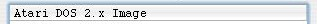
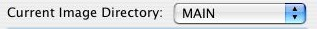
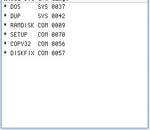
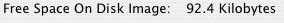
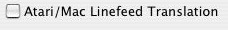

|
Atari800MacX Help
Disk Image Editor
|
The Disk Image Editor on the Atari800MacX emulator allows you to edit a
ATR disk image that is formated with any of the supported Atari DOS
formats. You may Import and Export files from/to the Mac file
system, as well as manipulate files and directories on the
image. The supported Atari DOS types are Atari DOS
1.0,
Atari DOS 2.x, Atari DOS 3.0, Atari DOS 4.0, Atari DOS XE, TopDOS,
BiboDos, MyDos, SpartaDos 2+, and BWDOS. When you select the Edit
Disk Image menu item and pick a disk image to edit, you get a window
like the one shown below. You may open multiple disk images at
once, and even drop and drag files between them. You can open an
image that is mounted in the emulator drive, but be very careful if you
do, as the two processes may corrupt the image. The emualtor
should not be accessing the image when you change it.

The Disk Editor has the following elements:
Image Type

The top of the file list view displays the type of DOS the
image was formatted with.
Current Image Directory

This pulldown displays the current directory on the disk image. If
the image does not support disk directories, this will be MAIN.
You may navigate to a lower disk directory by double clicking on the
directory name in the file list. To navigate back up the
directory tree, you may use this pulldown to select the directory to
move to.
File List

This area lists the files in the current directory, in a format similar
to that used by the DOS type for that image. Files may be dragged
and dropped to/from a Finder window to import/export the files.
Files may also be dragged and dropped between disk editor
windows. Dragging of Directories is not supported.
Free Space

This displays the amount of free space on the disk image in Kilobytes,
not sectors or blocks.
Header Write Protect Bit Set In Image

This checkbox displays the state of the Write Protect bit in the header
of the ATR image. You may change it by clicking on the
checkbox. Normally, if this is set, it will prevent the emulator
and other programs from writing to the image. However, don't
confuse this with the permissions on the file image in the MacOSX
operating system, as they are separate.
Action Buttons

These buttons are used to perform operations on selected files in the
File List. If they are not active, it may be that no files are
selected, the wrong file types are selected for the operation
(directories), or the disk may be write protected, either by the
operating system, or by the ATR header write protect bit. (Note
for a directory to be deleted, it must be empty.)
Linefeed Translation

This checkbox turns the translation of Atari Linefeed characters on or
off for Import/Export operations to the Mac File system.